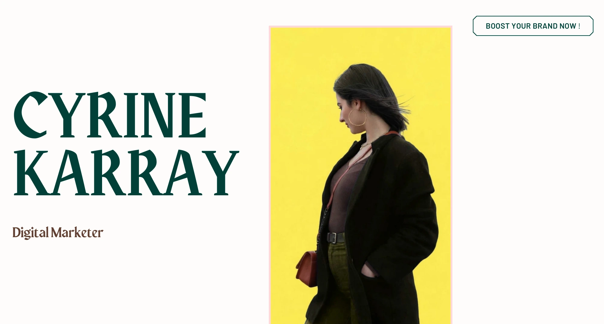
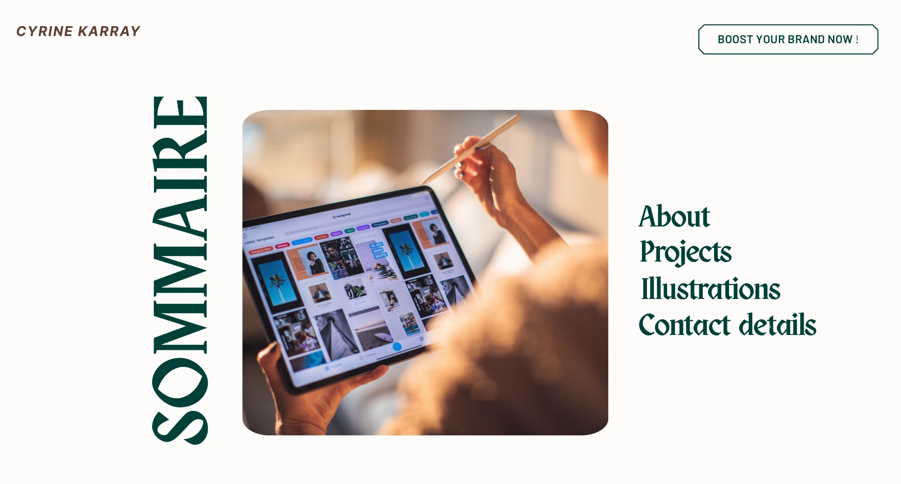
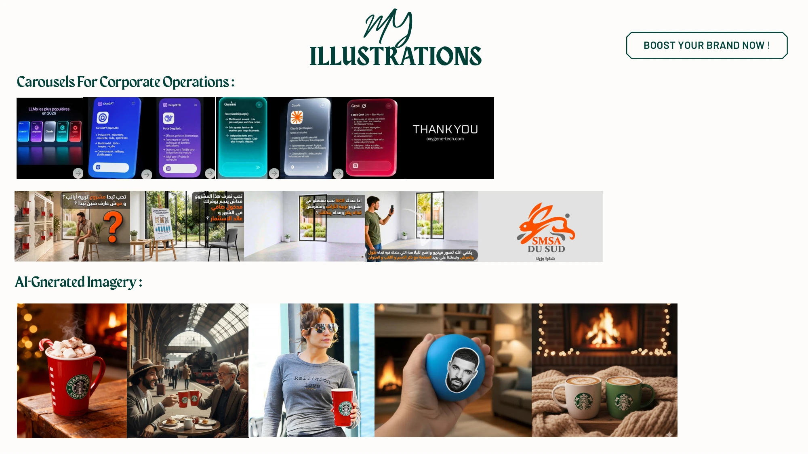
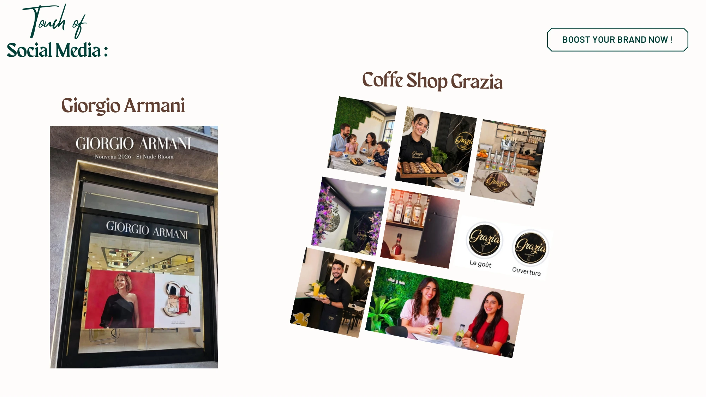
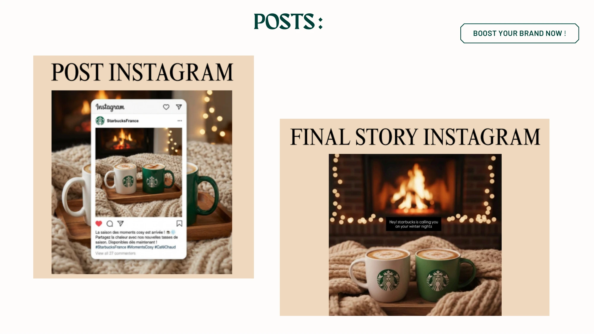
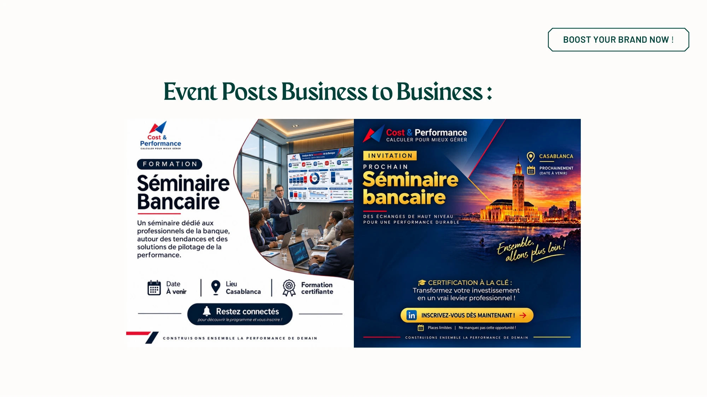
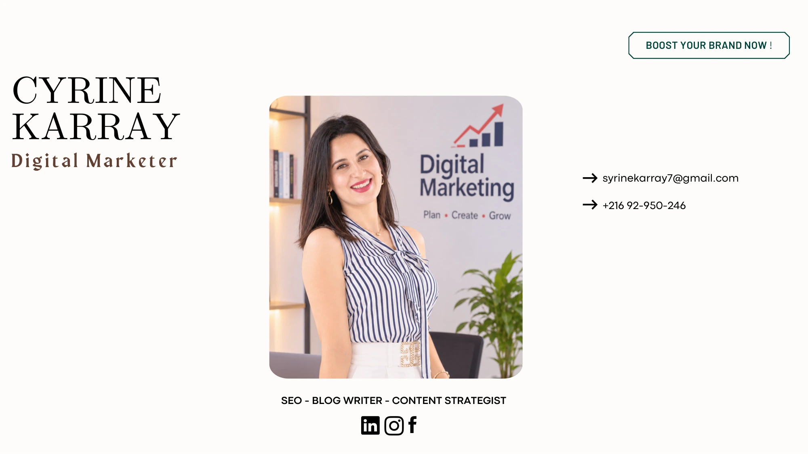

![BOOST YOUR BRAND NOW !
Who is CYRINE?
I’m a creative and curious digital marketer with a strong
interest in SEO, content creation, and content strategy. I
enjoy analyzing, exploring new ideas, and turning
inspiration into engaging content that boosts brand
visibility and supports business growth. As a sociable
person, I love attending marketing events, webinars, and
networking opportunities to exchange ideas and keep
learning. I’m particularly interested in B2B marketing,
where I can combine creativity, analytical thinking, and
strategic content to create real value for businesses.](pages/page-3.webp)
![Seo Audit Projects :
Marketing Strategy Project :
Brands Projects :
Developing comprehensive brand
identities and cohesive strategies to
strengthen market positioning and foster
customer loyalty.
PROJECTS
MY
Enhancing website speed, code, and
technical structure to ensure seamless
search engine indexing
Driving natural audience
acquisition
Researching search intent and
structuring content (SEO & GEO)
Igniting rapid word-of-mouth growth through
contagious and emotionally engaging digital
marketing initiatives.
BOOST YOUR BRAND NOW !](pages/page-4.webp)